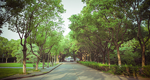

Unique advantages
Different from other social units, colleges and universities have the advantages of talent gathering and intensive intelligence, active thinking and communication, academic research and theoretical innovation, ideological and political education and learning system. Colleges and universities in cultivating and practicing the socialist core values in the concrete practice of the ideological and political education should pay attention to the important role of the first class and second class, make the best use of traditional media and new media communication effect, also should avoid to form the inherent defect of practice to improve the depth of the socialist core values and practice.


The campus scenery